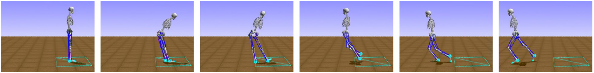

{{ page.title }}
Journal of NeuroEngineering and Rehabilitation (2021)
Seungmoon Song (1) Łukasz Kidziński (1) Xue Bin Peng (2) Carmichael Ong (1) Jennifer Hicks (1) Sergey Levine (2) Christopher G. Atkeson (3) Scott L. Delp (1)
(1) Stanford University (2) University of California, Berkeley (3) Carnegie Mellon University

|
Abstract
Modeling human motor control and predicting how humans will move in novel environments
is a grand scientific challenge. Researchers in the fields of biomechanics and motor
control have proposed and evaluated motor control models via neuromechanical
simulations, which produce physically correct motions of a musculoskeletal model.
Typically, researchers have developed control models that encode physiologically
plausible motor control hypotheses and compared the resulting simulation behaviors to
measurable human motion data. While such plausible control models were able to simulate
and explain many basic locomotion behaviors (e.g. walking, running, and climbing stairs),
modeling higher layer controls (e.g. processing environment cues, planning long-term
motion strategies, and coordinating basic motor skills to navigate in dynamic and complex
environments) remains a challenge. Recent advances in deep reinforcement learning lay a
foundation for modeling these complex control processes and controlling a diverse repertoire
of human movement; however, reinforcement learning has been rarely applied in
neuromechanical simulation to model human control. In this paper, we review the current
state of neuromechanical simulations, along with the fundamentals of reinforcement learning,
as it applies to human locomotion. We also present a scientific competition and accompanying
software platform, which we have organized to accelerate the use of reinforcement learning
in neuromechanical simulations. This “Learn to Move” competition was an official competition
at the NeurIPS conference from 2017 to 2019 and attracted over 1300 teams from around the
world. Top teams adapted state-of-the-art deep reinforcement learning techniques and produced
motions, such as quick turning and walk-to-stand transitions, that have not been demonstrated
before in neuromechanical simulations without utilizing reference motion data. We close with
a discussion of future opportunities at the intersection of human movement simulation and
reinforcement learning and our plans to extend the Learn to Move competition to further
facilitate interdisciplinary collaboration in modeling human motor control for biomechanics
and rehabilitation research.
|
Paper: [PDF] Website: [Link]
|
Bibtex
@article {
Song2020.08.11.246801,
author = {Song, Seungmoon and Kidzi{\'n}ski, {\L}ukasz and Peng, Xue Bin and Ong, Carmichael and Hicks, Jennifer and Levine, Sergey and Atkeson, Christopher G. and Delp, Scott L.},
title = {Deep reinforcement learning for modeling human locomotion control in neuromechanical simulation},
elocation-id = {2020.08.11.246801},
year = {2020},
doi = {10.1101/2020.08.11.246801},
publisher = {Cold Spring Harbor Laboratory},
URL = {https://www.biorxiv.org/content/early/2020/08/12/2020.08.11.246801},
eprint = {https://www.biorxiv.org/content/early/2020/08/12/2020.08.11.246801.full.pdf},
journal = {bioRxiv}
}